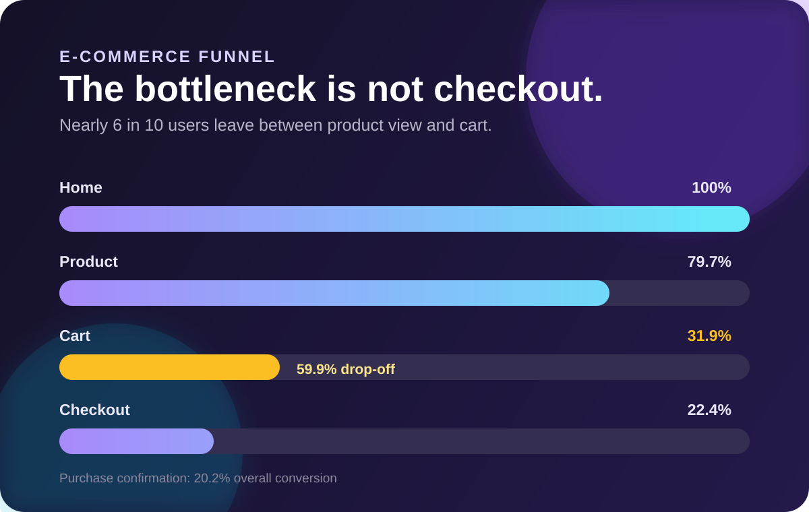

01 / Product analytics
E-commerce Funnel & Behaviour Analysis
Reconstructed a five-stage customer journey from event-level data to find where healthy traffic failed to become purchases.
- 20.2% of users completed a purchase.
- 59.9% dropped between product view and add-to-cart.
- Regional and referral patterns were consistent, pointing to structural UX friction.
Recommended decision
Prioritise product-page clarity, trust signals and mobile usability, then validate changes with controlled A/B tests.